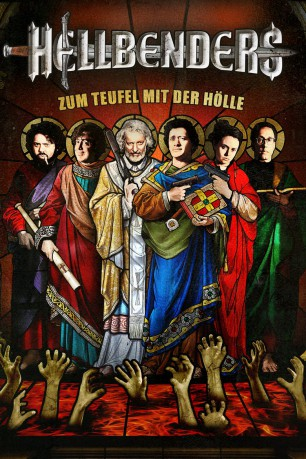
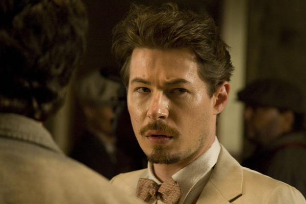

#6453 Hellbenders - Zum Teufel mit der Hölle
 
 IMDB-Wertung: 4.8 / 10
IMDB-Wertung: 4.8 / 10  Metascore: 0
Metascore: 0 
Diese Priester machen den höllischen Heerscharen alle Ehre. Denn die höchst blasphemisch handelnden Geistlichen um Lawrence und Angus haben es sich zur Aufgabe gemacht, in steter Sünde zu leben. So hoffen sie, tatsächliche Dämonen an sich zu binden und mit sich in die Hölle zu nehmen, nachdem sie die Todsünde des Selbstmordes begangen haben. Als einer der ihren von einer besonders diabolischen Entität beherrscht wird, müssen die "Hellbound Saints" ihr Sündenregister noch einmal noch oben korrigieren, um ihren besessenen Kollegen zur Hölle zu schicken.
Jahr: 2012
Dauer: 86 Minuten
FSK: 16
Land: USA Studio: The Film ArcadeTonspuren: DTS - ,
Untertitel: Deutsch,
Auflösung: 1080p (1920x800) Größe: 4505 MB
Genre: Thriller, Horror, Komödie
Regisseur: J.T. Petty
Drehbuch: J.T. Petty
Soundtrack:
Darsteller:
 Clifton Collins Jr. als Lawrence
Clifton Collins Jr. als Lawrence Clancy Brown als Angus
Clancy Brown als Angus- Andre Royo als Stephen
- Robyn Rikoon als Elizabeth
 Macon Blair als Macon
Macon Blair als Macon- Stephen Gevedon als Clint
 Larry Fessenden als Detective Elrod
Larry Fessenden als Detective Elrod Dan Fogler als Eric
Dan Fogler als Eric-  Edoardo Ballerini als Father Atherton
- Samantha Buck als Penelope
- Dan Chen als Demon Man child
 Brian Donahue als Church Thug
Brian Donahue als Church Thug- Lauren Francesca als Cecilia
 Jaiden Kaine als Demon
Jaiden Kaine als Demon- Jacqueline Knapp als Widow
- Justin Little als Demon possessed husband
- Lisa-Marie Long als British Demon
- Giovanna Maimone als Demon Possessed Wife
 Raymond Mamrak als Irish Thug
Raymond Mamrak als Irish Thug- Folake Olowofoyeku als Serena Venter
- Donna Ross als Waitress
 Rico Simonini als Contractor
Rico Simonini als Contractor- Sophie Vanier als Paramedic
- Aaron Auslender als Passenger
- Larry Block als Rabbi Weinberg
- Patricia Bruno als Passenger
- Nadim Choudhary als Macon's Indonesian Lover
- Ronald De Suze als Passenger
- Diana Fuller als Kid
- Corey Gegner als Video Crewman #1
- Caryll Gordon als Passenger
- Michelle Hill als Passenger
- Keith Johnson als Passenger
- Carole Langan als Ms. Rainey
- Roberto Monticello als Castro
- Clementine Jane Petty als Angry Baby
- Lorrainne Petty als Macon's Carnal Rabbit
- Hugh Potts als Passenger
- Chris Powell als Passenger
- George Schram als Priest
- John Shim als Video Crewman #2
- Christopher Slade als Detective
- James Slattery als Larry's Neighbor
- Jeff Ware als Dermot Boyce
Datei: X:\2012(G-M)\Hellbenders - Zum Teufel mit der Hölle (2012, FSK16, 1920x800).mkv seit 22.06.2017
Festplatte: HD 2012(A-M)
 Es gibt insgesamt 112 Filme in der Gruppe '2012(G-M)'
Es gibt insgesamt 112 Filme in der Gruppe '2012(G-M)'